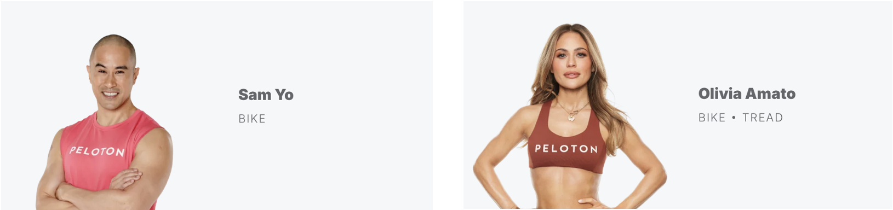
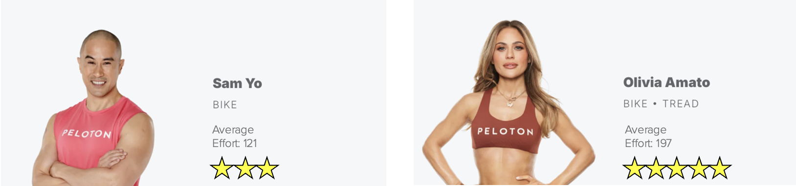

# A tibble: 5 × 3
Total_kj Gender Instructor
<dbl> <chr> <chr>
1 96 F Sam
2 209 F Olivia
3 200 F Sam
4 184 F Olivia
5 170 M Sam Summarizing Data With Tidyverse
Let’s learn how to summarize data by groups.
Sometimes, data has different dimensions that allow us to group observations. For example, this dataset records the total power generated by each participant in a spin class. The gender and instructor variables both have distinct categories we can use for grouping.
Grouping data by a variable’s dimensions enables us to compare descriptive statistics across different groups. Suppose we want to compare the performance of class participants between Sam and Olivia. We can first group the data by instructor and then calculate the mean power generated to see how their average class efforts differ.
This code calculates the mean power output for each instructor. It works as follows:
First, we define the tibble (spin) and specify how to group the data. The group_by() function determines which variable to use for grouping. Since there are only two instructors (Sam and Olivia), two groups will be created. Note: The grouping is done implicitly.
Next, we use the summarise() function to define how to summarize each group. Inside the function, we assign meaningful names to our output columns and apply corresponding summary functions. For class size, we use the name Size and assign the n() to count the number of observations under each instructor (grouping). The MeanPower column calculates the average Total_kj generated in each instructor’s class.
The resulting table shows how many participants attended each instructor’s class and their average power output (i.e., effort). Looks like Olivia pushes her 30 students hard!
We can now use the summary statistic to help us choose the right instructor.

# A tibble: 2 × 3
Instructor Size MeanPower
<chr> <int> <dbl>
1 Olivia 30 197.
2 Sam 30 121.